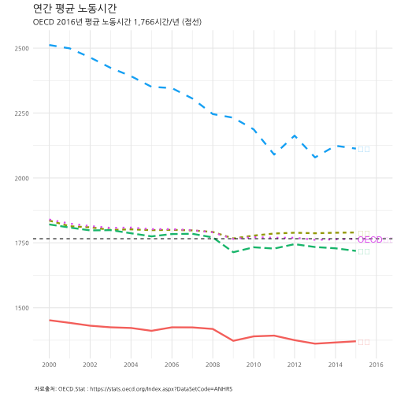

데이터 과학자와 함께 하는 제19대 대통령 선거
OECD 주요국가 연간 노동시간
1. OECD 주요국가 연간 노동시간 1 2
저녁이 있는 삶이 2012년 손학규 대표가 대통령 출마를 선언하면서 한국사회에 던진 출사표다. 저녁이 있는 삶을 보장받기 위해서 물리적으로 최소한 보장받아야 하는 것이 여유시간이다. OECD에서 매년 조사하고 있는 주요국가 연간 노동시간을 시각화해서 더 나아질 여유가 있는지 살펴보자.

2. OECD 주요 국가별 연간 노동시간 추이 시각화
OECD 공개 데이터를 구글에서 검색하면 쉽게 OECD Average annual hours actually worked per worker 웹사이트에 접속하게 된다. 엑셀이나 .csv 등 분석에 용이한 형태로 다운로드 받는다.
2.1. 환경설정
# 0. 환경설정 --------------------------------------------------------------------------
library(tidyverse)
library(lubridate)
library(ggthemes)
library(animation)
library(extrafont)
loadfonts()2.2. OECD 연간 노동시간 데이터
데이터를 불러와서 시계열 데이터형태로 변형한 후에, 한국을 비롯한 주요 국가를 선택하고, 한글화 작업을 한다.
# 1. 데이터 가져오기 --------------------------------------------------------------------------
# https://stats.oecd.org/Index.aspx?DataSetCode=ANHRS
wh <- read_csv("data/ANHRS_18012017111048897.csv")
wh$date <- as.Date(paste0(wh$Time,"-01-01", format = "%Y-%m-%d"))
korea_friends <- c("Korea", "Germany", "Spain", "France", "Japan", "United States", "Mexico", "Russian Federation", "OECD countries")
wh_df <- wh %>% dplyr::filter(Country %in% korea_friends & `Employment status` %in% "Total employment") %>%
dplyr::select(date, Country, work_hour=Value)
# 2. 데이터 정제 --------------------------------------------------------------------------
wh_df$Country <- plyr::revalue(wh_df$Country, c("Germany" ="독일",
"Korea" = "한국",
"France"="프랑스",
"Mexico" = "멕시코",
"Spain" = "스페인",
"United States" = "미국",
"Russian Federation" = "러시아",
"Japan" = "일본",
"OECD countries" = "OECD평균"))2.3. 한국을 포함한 9개국 연간 노동시간 시각화
“한국”, “독일”, “스페인”, “프랑스”, “일본”, “미국”, “멕시코”, “러시아” 8개국과 “OECD평균” 총 9곳에 대해 시각화한다.
# 3.1. 연간 근로시간 국제 비교 ------------------------------------------------------------------
ggplot(data=wh_df, aes(x=date,y=work_hour, color=Country, label=Country))+
geom_line(size=1.1) +
facet_wrap(~Country) +
theme_minimal() +
geom_hline(yintercept=1766, linetype=2)+
theme(legend.position="none", plot.caption=element_text(hjust=0,size=8),plot.subtitle=element_text(face="italic"),
axis.text=element_text(size=7.5))+
labs(x="",y="",title="연간 평균 노동시간",
caption="\n 자료출처: OECD.Stat : https://stats.oecd.org/Index.aspx?DataSetCode=ANHRS",
subtitle="OECD 2015년 평균 노동시간 1,766시간/년 (점선)") +
theme(text=element_text(family="NanumGothic"))2.4. 한국, 일본, 미국, 독일, OECD 평균 일괄비교
facet 그래프가 아니라 한국, 일본, 미국, 독일, OECD 평균, 연간 노동시간을 일괄비교하는 시각화 그래프를 생성한다.
# 3.2. 한국, 일본, 미국, 독일, OECD 평균 ------------------------------------------------------------------
dlist <- unique(wh_df$date)
ggplot(data= wh_df %>% dplyr::filter(Country %in% c("한국", "일본", "독일", "미국", "OECD평균")),
aes(x=date, y=work_hour, color=Country, label=Country, linetype=Country)) +
geom_line(size=1.1)+
theme_minimal() +
scale_x_date(breaks=seq(dlist[1], tail(dlist, n=1)+years(1), "2 year"),
date_labels= "%Y", limits=c(dlist[1],dlist[16]+years(1))) +
geom_hline(yintercept=1766,linetype=2) +
geom_text(data=wh_df %>% dplyr::filter(date == tail(dlist, n=1) & Country %in% c("한국", "일본", "독일", "미국", "OECD평균")), hjust=0, nudge_x=30) +
theme(legend.position="none",plot.caption=element_text(hjust=0,size=7),plot.subtitle=element_text(face="italic"),
axis.text=element_text(size=7.5))+
labs(x="",y="",title="연간 평균 노동시간",
caption="\n 자료출처: OECD.Stat : https://stats.oecd.org/Index.aspx?DataSetCode=ANHRS",
subtitle="OECD 2016년 평균 노동시간 1,766시간/년 (점선)") +
theme(text=element_text(family="NanumGothic"))
2.5. 한국을 포함한 6개국 연간 노동시간 변화 애니메이션
한국을 포함한 6개국 연간 노동시간 변화를 애니메이션으로 시각화한다.
# 3.3. 연간 노동시간 애니메이션----------------------------------------------------
wh_plot <- function(i){
ggplot(data= wh_df %>% dplyr::filter(date<=dlist[i], Country %in% c("일본", "한국", "독일", "미국", "멕시코", "OECD평균")),
aes(x=date, y=work_hour, color=Country, label=Country, linetype=Country)) +
geom_line(size=1.1)+
theme_minimal() +
scale_x_date(breaks=seq(dlist[1], tail(dlist, n=1)+years(1), "2 year"),
date_labels= "%Y", limits=c(dlist[1],dlist[16]+years(1))) +
geom_vline(xintercept=as.numeric(ymd("2012-01-01")), linetype=3) +
geom_text(data=wh_df %>% dplyr::filter(date==tail(dlist[i], n=1) & Country %in% c("일본", "한국", "독일", "미국", "멕시코", "OECD평균")), hjust=0, nudge_x=30) +
theme(legend.position="none",plot.caption=element_text(hjust=0,size=7),plot.subtitle=element_text(face="italic"),
axis.text=element_text(size=7.5))+
labs(x="",y="",title="연간 평균 노동시간",
caption="\n 자료출처: OECD.Stat : https://stats.oecd.org/Index.aspx?DataSetCode=ANHRS",
subtitle="저녁이 있는 삶 출간(2012년)") +
theme(text=element_text(family="NanumGothic"))
}
oopt = ani.options(interval = 0.5)
saveGIF({for (i in 1:16) {
g <- wh_plot(i)
print(g)
print(i)
ani.pause()
}
for (i2 in 1:20) {
print(g)
ani.pause()
}
}, movie.name="working_hours_compare international.gif", ani.width = 750, ani.height = 400)